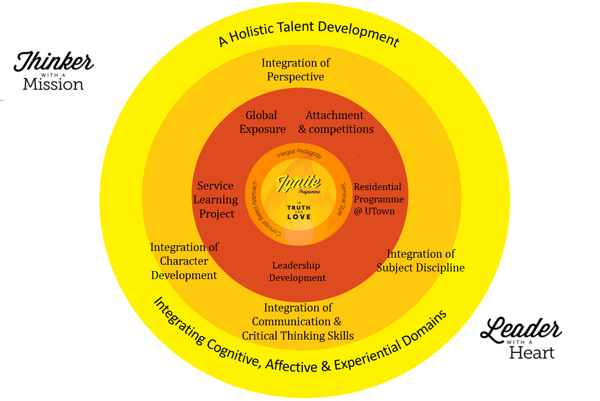
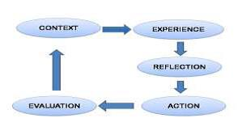

Ignite Framework

The desired outcomes for every CJCian are:
- Thinker with a sense of mission. This means that he is a critical thinker who seeks the Truth. He displays the traits of intellectual humility, intellectual perseverance, intellectual integrity, intellectual empathy, intellectual autonomy and intellectual courage in his thinking. He is also confident in reasoning and is fair-minded. Beyond the aim of achieving academic excellence, the CJCian is able to translate his thinking into concrete actions that can benefit the greater community.
- Leader with a heart. This means that he is a servant leader. He demonstrates the attributes of Integrity, Discernment, Resilience, Purpose, Nurturing, Initiative and Humility. The college believes that all CJCians are leaders. Regardless of whether he has an official appointment or not, he is capable of exercising leadership in his daily actions. The CJCian will be given opportunities to apply leadership skills at the team, organisational and even global levels to serve the greater good.
1. The Framework starts with the innermost ring which shows that the Ignite Programme is underpinned by the college core values “In Truth and Love”.
2. The second ring signifies the three key approaches of the Ignite Programme – Integral Pedagogy, Concept Based Approach and Seminar Style Pedagogies.
2.1 Integral Pedagogy
In line with John Dewey’s vision of the student as a holistic human being, fully engaging in his social life, i.e. society, and the needs of an educational system to assist in the student’s moral development to participate and serve that society, this pedagogy promotes a vision of the human being who has, in addition to the intellectual dimension, the dimensions of the “human, social, spiritual, and moral”.
It is a process by which teachers accompany learners in the pursuit of competence, conscience, and compassionate commitment. It includes “caring for each and every student”, the development of the whole person or, the formation of “women and men for others”, as well as “the promotion of justice”.
Reflection is an essential element in the transformational process to promote learning as the process of becoming critically aware of how and why our presuppositions have come to constrain the way we perceive, understand, and feel about our world.
As a teaching model, it comprises five main elements of CONTEXT, EXPERIENCE, REFLECTION, ACTION and EVALUATION.

2.2 Concept Based Approach
We adopted the model from H. Lynn Erickson, author of the book Concept-based Curriculum and Instruction for the Thinking Classroom. At the heart of a concept-based curriculum is teaching for deeper understanding of content, transfer of knowledge and development and shaping of the conceptual mind.
The Concept-based Curriculum is a three-dimensional curriculum design model that frames the factual content of subject areas with disciplinary concepts, principles and generalizations. More emphasis is given for understanding, besides knowing and doing. Tutors teach more at the levels of concepts and generalizations for deep understanding and the transfer of knowledge.
2.3 Seminar Style Pedagogies
Instead of the Lecture and Tutorial system, the CJC Ignite Programme adopts a seminar style teaching approach which is increasingly employed in tertiary education. The smaller teacher and student ratio allows greater tutor-student interaction and hence better engagement of students during lessons. Teaching methods are deployed for deeper conceptual understanding and integration. It provides a more conducive environment for exploration and reflection, activating prior concepts and experiences, verbal expression of ideas, collaboration, creative discovery and self-directed learning with ICT.
3. The third ring of the framework represents the different programmes and processes of the Ignite Programme.
3.1 Service Learning Project
It is our belief that service learning prepares students to serve those in need and to work for social justice, and generates opportunities for critical thinking, problem-posing and community building. It gives students an authentic learning experience beyond the classroom. Students are expected to complete a service-learning project for the targeted community and/or an advocacy programme.
3.2 Residential Programme @ UTown
Students in the programme will attend a 4D3N residential programme at the University Town campus in NUS. This unique experiential programme is an integrated learning platform using the interdisciplinary Concept Based Approach and the Inquiry Method. The residential programme is built around a broad theme each year to enable students to understand the theme through the respective disciplinary lens.
3.3 Integration of Subject Disciplines
The disciplinarian understanding of concepts under different subjects is explored during the Residential Programme's “fireside chat” sessions and workshops facilitated by professors of UTown. These discipline-based concepts, through a guided inquiry framework (CJC’s F.I.R.E.), will develop students’ intellectual abilities to perceive and appreciate the complexities in their application of these concepts within a community.
The FIRE approach comprises inquiry-based and concept-based learning :
- Finding data (through both experiential and cognitive/ conceptual learning);
- Integrating new and prior knowledge and experiences;
- Reflecting to construct and evaluate data and then;
- Enabling others to benefit from the students’ deeper understanding (for example, presentation of analysis and solutions, advocacy, generating community conversations, advocacy/ awareness programmes, implementing service projects).
3.4 Integration of Perspectives
Through interacting with the target community and engaging in dialogues with leaders of society and members of academia, students are challenged to synthesize knowledge and viewpoints so as to deepen and broaden their understanding of issues both within classroom settings and outside the classroom.
3.5 Integration of Character and Leadership Development
With the understanding that all JC students are leaders, the students in the programme will be given more opportunities to co-create the Student Development Curriculum Programme with their tutors, anchored in the context of service learning projects and life skills development.
3.6 Integration of Communication and Critical Thinking Skills
Capitalising on the strengths of the college as a Centre for the English Language Elective Programme (English Language and Linguistics), every opportunity will be given for the students to hone their communication and critical thinking skills through oral, written and audio-visual modes.
3.7 Enrichment Modules
These include introductory workshops on critical thinking, reflection sessions on service learning experiences and a leadership conference over the two year journey.
4. The outer ring signifies that all the above programmes and processes seek to bring about the holistic development of our students in the Cognitive, Affective and Experiential domains.
|
Copyright © Catholic Junior College 2015. All rights reserved. |
Address129 Whitley Road, Singapore 297822ContactTel No : +65 6252 4083 / 4Fax No : +65 6253 7267 Email : catholic_jc@moe.edu.sg Web : cjc.moe.edu.sg |
|